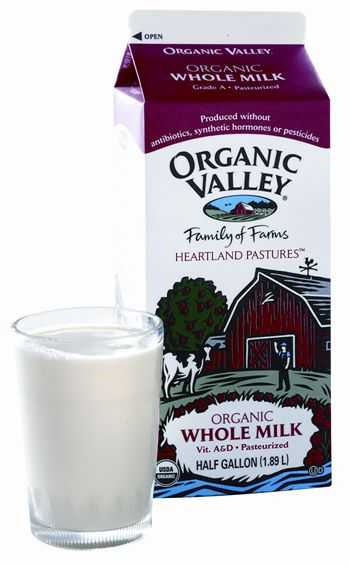

Consumer opposition to artificial hormones in milk is rising, but Monsanto just won’t give up. Injecting cows with Monsanto’s genetically engineered rBGH (recombinant bovine growth hormone) is like injecting human athletes with illegal hormones and steroids. It may have a short-term performance-enhancing effect (in the cows’ case, 5 percent to 15 percent more milk per lactation cycle), but cows treated with rBGH suffer from higher rates of mastitis (inflammation of the udder), birth disorders, hoof problems, diarrhea and other ailments. Because of these concerns, rBGH is prohibited in most industrialized nations, including Canada, Australia, New Zealand and all of the European Union nations.
Here in the United States, however, the Food and Drug Administration (FDA) approved rBGH (also known as rBST, for recombinant bovine somatotropin) in 1993. The Monsanto Corp. - the sole vendor of the drug, trademarked Posilac - promptly launched an aggressive marketing campaign, and by 1998, some 30 percent of U.S. dairy cows were on the stuff.
Some research indicates that rBGH is not just bad for cows, it’s also bad for humans that consume milk from those cows. The health hazards for humans are twofold, explains Rick North of Physicians for Social Responsibility: antibiotic resistance and a possible link to cancer. “There’s no doubt whatsoever that rBGH use increases disease in cows, which in turn leads to more use of antibiotics,” North says. To treat mastitis, farmers use antibiotics such as erythromycin, amoxicillin and penicillin. The more these are used in agriculture, the less effective they are against human diseases.
And then there’s the cancer risk. Studies have shown that rBGH increases levels of another hormone in milk called insulin-like growth factor 1 (IGF-1). IGF-1 is produced naturally by both cows and humans, but elevated levels of IGF-1 in people are associated with breast, prostate and colorectal cancers.
The efforts by Monsanto to prevent the public from determining which products are “rBGH-free” have cemented its image as a rapacious corporate bully. In 2003, the company sued Oakhurst Dairy of Portland, Maine, for putting a statement on its cartons that read “no artificial growth hormones.” A settlement allowed Oakhurst to keep their claim if they added a disclaimer saying the FDA has found no significant difference between milk produced with or without rBGH.
Most recently, Monsanto has been pursuing its pro-Posilac campaign at the state level. In October 2007, the Pennsylvania Department of Agriculture (PDA) stunned farmers, processors and consumers alike by declaring “rBGH-free” milk labeling illegal. After a flood of protests, the agency withdrew the ban, but not before Monsanto and PDA issued a series of statements claiming that consumers were “confused” by “misleading” labeling and that demand for rBGH-free milk was nonexistent. (At press time, similar events were occurring in New Jersey, Ohio, Kansas, Utah and Indiana.)
The truth is, consumers are making their demand for rBGH-free milk loud and clear, and the dairy sector is responding. For over a decade, Ben & Jerry’s ice cream containers have proudly informed shoppers that their products are rBGH-free. Of the 100 top U.S. dairy processors, 34 have declared themselves either partially or completely rBGH-free, including Kroger, Safeway Dairy Group, Anderson Erickson and Publix Super Markets. Even Wal-Mart has announced that its private label Great Value milk will no longer come from treated cows. Retailers also are getting in on the trend: Starbucks went rBGH-free as of the end of 2007, as did Chipotle Restaurants.
All that shift in demand is having an impact: a 2007 USDA survey found that just 17.2 percent of U.S. dairy cows are on Monsanto’s genetically engineered growth hormone, down from 22.3 percent in 2002. The battle’s not over, but it looks like free speech and the consumer’s right to know may prevail.
|
 ORGANIC VALLEY One way to avoid rBGH is to choose certified organic milk. Its producers are not allowed to use the hormone. |
|
|